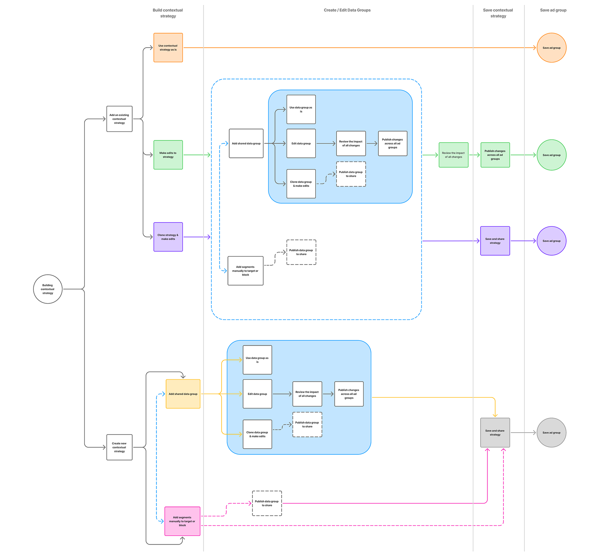
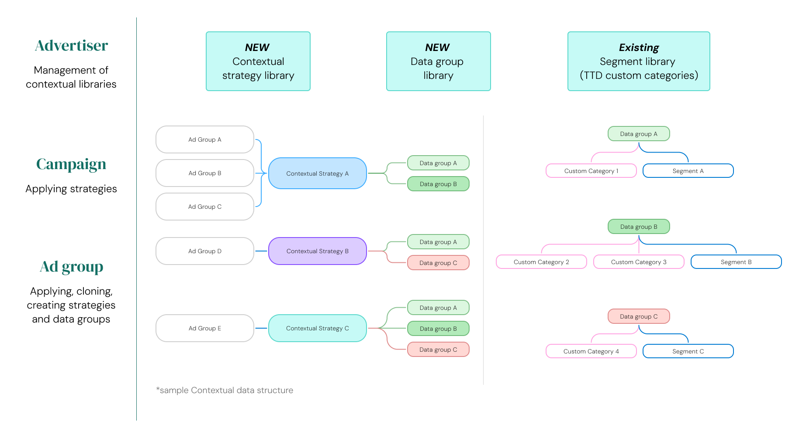

Rebuilding the contextual targeting system

Two weeks in, I rescoped the project...
I joined the contextual targeting team to ship what was framed as a straightforward feature: add boolean logic (AND/OR) to how advertisers combine targeting segments. Existing patterns from a parallel audience-targeting effort meant this looked like a fast win.
Two weeks of stakeholder conversations and foundational user research later, I'd reframed it. The "boolean logic feature" wasn't the problem — it was a symptom. The real gap was that advertisers had no durable way to build, reuse, or understand contextual strategies on the platform. Shipping the original brief would have been a band-aid on a load-bearing wall.
This case study walks through how I got there, what I designed instead, and what shipped.
Project outcomes
Surpassed $50M total spend target in Contextual Targeting by the end of 2025 by $5M
Reduced contextual strategy setup time by 40% with the creation of reusable strategies
↑ 50%+ in Contextual Strategies applied
Successfully led design across 1 PM, 7 engineers, 2 UX partners (content and research)
The Trade Desk is a demand-side platform that allows advertisers like Coca-Cola and Walmart to purchase digital ad inventory across display, video, audio, CTV, and native channels.
Contextual targeting is one of many ways advertisers decide where their ads should and shouldn't run (e.g., "show ads on outdoor travel pages" / "block ads near terrorism content"). It's a growing strategic priority for the industry as third-party identifiers get deprecated.
The Contextual Marketplace structure
The marketplace consists of various data providers, including our own in-house TTD data, which offers segments of classified content by topic, brand safety, or sentiment, that advertisers can choose from to target or block within their ad campaigns or ad groups.
Data providers
Companies that analyze web content, classifying pages into segments based on topic ("Sports" or "Finance"), brand safety levels ("Low Risk for Violence"), or sentiment.
Advertisers
Select segments from data providers to target or block in their campaigns and ad groups.
The inherited problem space
When I joined, the team had identified four issues with how the contextual marketplace worked:
Issue 1
Overlapping segments across data providers.
Issue 2
Advertisers are charged in full per provider, regardless whether 1 or 10 segments were chosen.
Provider A
Provider B
Desk
The inherited problem space continued...
Issue 3
Inability to add dynamic targeting logic → narrow reach.
Issue 4
Tens of millions in revenue opportunity unrealized as TTD tripled the number of contextual data providers in 2024.

The proposed solution
The solution asked of me was to incorporate this dynamic targeting logic, where advertisers would apply both AND and OR logic to the segments they wanted to target and/or block in their contextual strategies.

Why I pushed back
Starting with stakeholder conversations across PM, the backend data team, and the parallel audience-targeting effort, I started to rethink the initial brief. My discussion with engineering immediately highlighted that our data model only supported to a single-use targeting flow. Adding AND/OR logic would technically work, but every campaign would have to rebuild the same logic from scratch.
Foundational UXR with seven advertisers confirmed this. Three patterns became evident at the end of our sessions:
- Advertisers were cloning campaigns to avoid rebuilding strategies and copy their targeting setup. This was fragile and error-prone. One trader described maintaining a personal spreadsheet to track which campaigns used which segment combinations.
- Strategies needed to live above the campaign. Advertisers thought in terms of brand-safe contexts (e.g., "our automotive evergreen strategy"), not individual campaign setups. The platform forced them to recreate the same strategy per ad group, with no way to update centrally when a data provider changed.
- Pricing and overlap were opaque. Advertisers couldn't see when segments from different providers covered the same content, and they were charged per provider regardless of how many segments they used. Without transparency, they couldn't make informed tradeoffs, so they defaulted to whichever provider their account team mentioned first.
Boolean logic alone wouldn't resolve these concerns. We needed a way to make strategies reusable, manageable, and transparent, with boolean logic as one capability within them. I socialized this concept with my PM and engineering leads, including a working session with the data team to confirm feasibility and accuracy and ultimately, obtained alignment to expand the scope.

A flowchart I created to brainstorm the reframed problemContextual building blocks
Working with my PM, engineering lead, and content writer, I defined three objects and the relationships between them.
Segment ≈ custom category
Categories of URLs, app IDs, content signals, etc. by topic from 3rd party contextual data partners & in-house offerings

Data group
Group of segments that are targeted or blocked within a contextual strategy.
Data groups can be reused if they're saved and managed in the saved data group library at the advertiser-level.

Contextual strategy
Collection of targeted and/or blocked data groups combined into one strategy.
Contextual strategies can be reused and managed in the contextual strategy library at the advertiser-level.
The alignment on these building blocks required broader horizontal alignment across other product teams, like retail and data measurement, to ensure we were using this naming structure consistently from a hierarchy standpoint. I led working sessions with design and PM counterparts to compare the objects we were working with and agree on shared principles. This naming structure became a shared pattern that other teams would adopt.
How these building blocks fit in the campaign hierarchy
Each ad group connects to a single contextual strategy. A strategy contains targeted and blocked data groups. Data groups contain segments.

Three flows for three pain points
Contextual strategy creation @ the ad group level
This flow walks through a user creating a new strategy from scratch, bypassing the contextual strategy library. The user is also creating a new data group from scratch and then saving it to the library for reuse at a later point. They are reusing an existing blocking data group from the library.
Click to walk through the flow.
Applying and editing a saved strategy @ the ad group level
This flow walks through adding a strategy from the library and then editing it by deleting a data group. Editing shared strategies will impact all other ad groups where this strategy is already applied. A warning interstitial is provided to users to alert them of this change.
Click to walk through the flow.
Editing a saved strategy @ the advertiser level
This flow walks through making changes to a strategy at the advertiser level via the Contextual strategy library. Again, an interstitial warning is provided to alert users where these changes will be applied at the ad group level.
Click to walk through the flow.